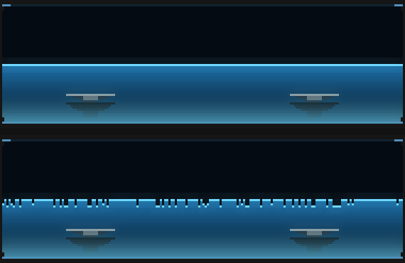
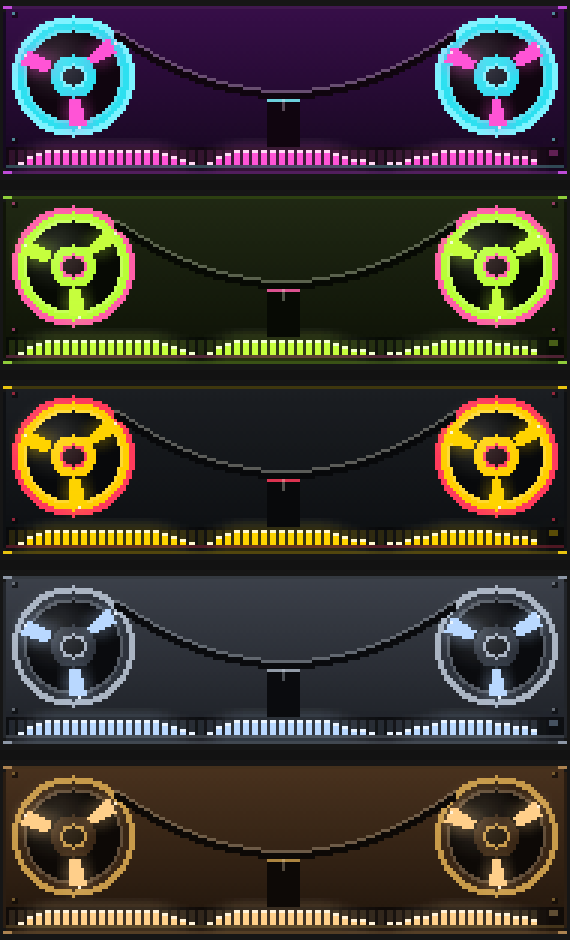
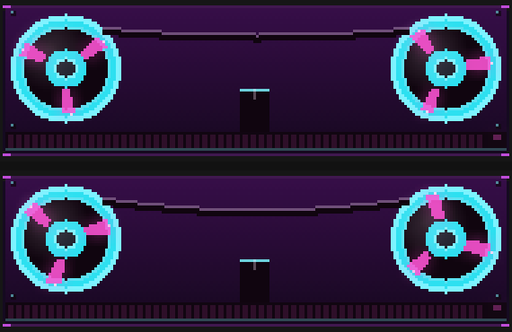

The fluid barely moving, the tape deck's colours, and the scope and reel flourishes
never seeming to happen.
The headline finding is that neither flourish was too small. Measured
against families whose flourishes read clearly, the scope's already changed more of the panel than the
VU slam or the spectrogram tear. They were the wrong KIND of change: the scope already looks like a
wiggly line, the reels already spin. So both were reworked for a change of character, not for
amplitude.
1Fluid: break the surface
Droplets used to fly only on a detected transient (~3/s), all from the highest crest in each HALF of the tank - so a whole volley left from within 3px of one column. Now one per segment across the width, plus continuous shedding off the fastest-RISING column so throws follow a travelling wave.

top: flourish off · bottom: on
What I want your eyes on: Whether 13.8 sheds/s reads as splashing or as drizzle. That is one constant (SHED_INTERVAL_MS = 85ms) and it is a first guess at something I cannot judge from a still. Droplets in flight went 8→32 on deep water. fluid-ink still throws none on purpose - it is the viscous one, so if that is the colourway you were watching, that is why it looked dead.
2Reel: three bright colourways
The five existing decks are all authentic machines - broadcast grey, walnut, black chrome, olive drab, cream plastic. These three borrow the vaporwave/pantone/flame palette instead.

new: Neon Miami, Acid lime, Pantone press · then two originals for comparison
What I want your eyes on: Whether these are the right three, and whether the five neutrals should now go. They were ADDED, not swapped, so nothing you liked is lost - but the random picker still lands on a neutral five times in eight. Say and I will drop them.
3Scope: overlapping sweeps
The trigger-loss flourish now draws three sweeps at once at different phases, instead of one sweep sliding. That is what a scope with no lock actually shows - the phosphor is written at a different phase every sweep and they are all visible together.
top: locked · bottom: trigger lost
What I want your eyes on: This is the one I am most confident in. The measurement said the old version already changed 38.5% of the panel - MORE than the VU needle slam (14%) or the spectrogram tear (3.5%), neither of which you have missed. So it was never too small; a sliding wiggly line just reads as a wiggly line. Judge whether three traces is too much of a mess.
4Reel: the tape lurches
The wow now displaces the tape by an absolute ±7.8px instead of scaling the sag. It scaled a term that is near zero exactly when a flourish fires - a flourish follows a big hit, so the bass that sets the sag has just dropped - which left a 30% speed error less than one pixel of tape to move.

top: flourish off · bottom: on, at 400ms of a 2200ms warble
What I want your eyes on:This one a still cannot show, and the pair below is close to useless for it - the tape pumps at 2.2Hz over 2.2s and a single frame catches it wherever it happens to be. Judge it in the running app. What I can report is that it went from 8.2% of the panel to 12.8%, and that the change is now whole-width tape motion rather than two 20px discs at slightly different angles.